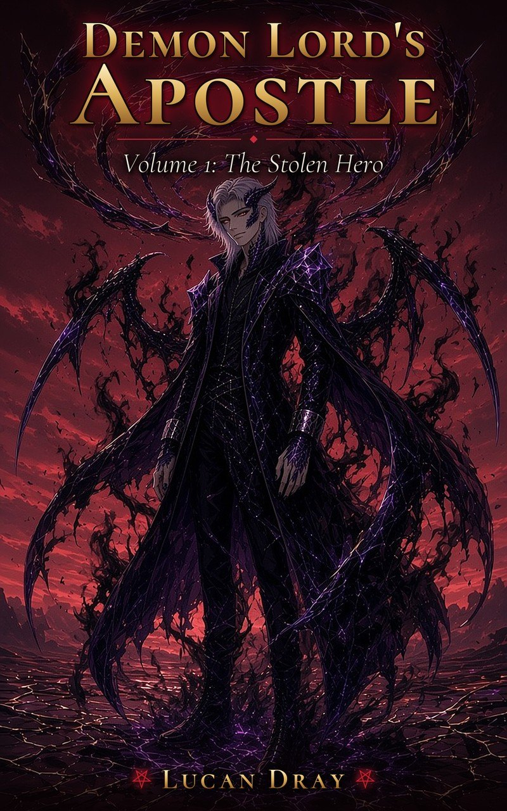

A dark fantasy isekai light novel
Demon Lord's Apostle
Volume 1: The Stolen Hero
- 13 chapters
- 2 interludes
- 44,643 words
- about 3.2 hours
18+ Mature: graphic violence and dark themes.
Synopsis
On a Thursday afternoon, a lecture about dark matter ends in a flood of gold. A goddess summons twenty-one students to another world to be her heroes. Twenty rise into the light.
Mephesto falls.
He wakes on cold black marble at the foot of an obsidian throne, face to face with the Demon Lord, the very enemy his classmates were brought here to kill. The Demon Lord offers him one power. Mephesto, a quiet student who has understood how dangerous exponential growth is since he was twelve, asks for the force that keeps galaxies from flying apart.
Level one. Fifteen attack. Every point of experience doubled.
It isn't enough to impress Shiryeon, the scarred commander who laughs in his face when he swears he'll marry her one day. So Mephesto does what he does best. He studies. He experiments. He lets the castle's most unsettling physician fuse Abyssal Drake blood into his bones, rebuilds his body around loops of mana that feed on themselves, and becomes something the goddess's heroes were never trained to face.
An imperial garrison learns exactly how long thirteen minutes can be.
But power that never stops growing needs a lock, and deep in the demon lands, the door of the Abyssal Spire has been waiting for him.
The cast
All characters ›

Contents
Volume 1: The Stolen Hero- Chapter 1The Wrong Light
- Chapter 2Blood in the Courtyard
- Chapter 3A Kitchen Full of Rumors
- InterludeThe Empty Seat
- Chapter 4The Inner Ring
- Chapter 5The War Table
- Chapter 6A Demon, Finally
- Chapter 7The Road to Harren
- Chapter 8Thirteen Minutes
- InterludeThe Report
- Chapter 9A Head on the War Table
- Chapter 10Recursion
- Chapter 11Prince of the Abyss
- Chapter 12Twenty-Eight Loops
- Chapter 13The Spire Door
- The endEnd of Volume 1
The Eldritch Court
Take your seat at the table. Chapter talk, art and news on Volume 2 live in Lucan Dray's Discord.
Join the Eldritch Court